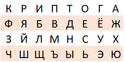
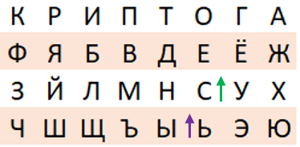
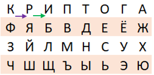
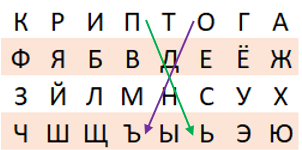

Пример шифрования:
Зашифруем сообщение “Секретное сообщение!” с ключевым словом “Криптография”. Сначала нужно заполнить матрицу:

Разобьем только буквы открытого текста на пары: "СЕ КР ЕТ НО ЕС ОО БЩ ЕН ИЕ".
Так как есть пара одинаковых букв, заменим их на “ОЪ”.
Разберем несколько случаев:
1. Пара “СЕ”.
Буквы находятся в одном столбце, поэтому заменяем их на буквы, находящиеся под ними, получаем замену “ЬС”.

2. Пара “КР”.
Буквы находятся в одной строке, поэтому заменяем их на буквы, находящиеся справа, получается “РИ”.

3. Пара “ОЪ”.
Буквы находятся в разных столбцах и строках, поэтому строим диагональ. Пара “ОЪ” образует диагональ, обозначенную фиолетовой стрелкой. А зелёной обозначены замены для этих букв - “ПЬ”.

Получившееся секретное сообщение: "ЬС РИ ДО СТ СЬ ПЬ ЛИ ДС ОБ"
Если расставить знаки препинания: "ЬСРИДОСТС ЬПЬЛИДСОБ!"